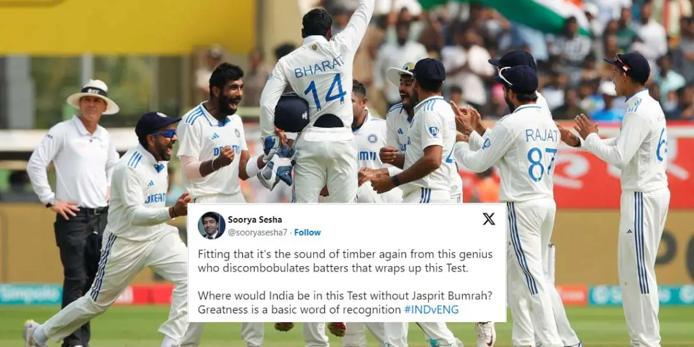
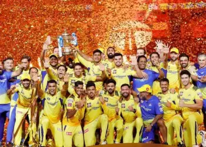
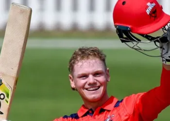
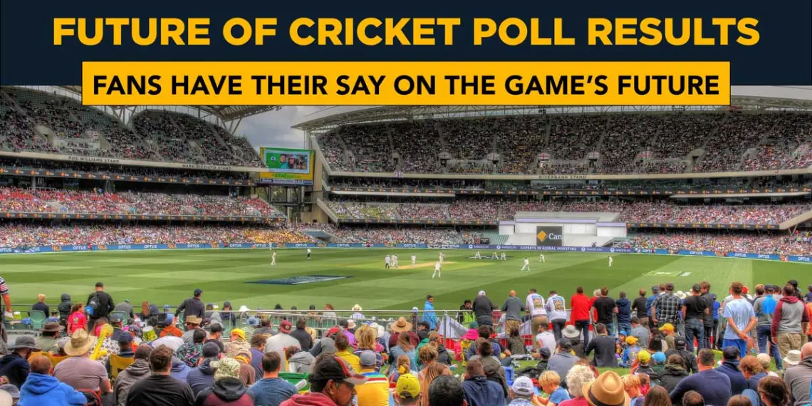

Fans slam England’s bowling attack selection for Hyderabad Test against India
January 28, 2024 at 9:28 pm

CRICKET NEWS
IND vs ENG 2nd Test Twitter reactions: India win by 106 runs
by Charbel Coorey January 28, 2024 at 9:28 pm 0Cricket News: IND vs ENG 2nd Test Twitter reactions: India win by 106 runs at...
- 5 classic Mitch Marsh quotes after winning the 2023 Allan Border Medal
- Fans slam England’s bowling attack selection for Hyderabad Test against India
- Visakhapatnam pitch report for 2nd IND vs ENG Test
- Hyderabad pitch report for 1st IND vs ENG Test
- Biggest first innings deficit to result in a Test win after batting first
- Gabba Brisbane weather forecast for 2nd AUS vs WI Test

CRIC BLOG
Why the Indian Premier League IPL is one of the best sporting competitions in the world
DECEMBER 20, 2023 AT 11:45 AM pm

BBL
3 players to watch out for in BBL 2023-24
DECEMBER 15, 2023 AT 4:08 PM pm
BBL
3 players to watch out for in BBL 2023-24
DECEMBER 15, 2023 AT 4:08 PM pmWhat does the future of cricket look like according to fans?
by Charbel Coorey January 28, 2024 at 9:28 pm 0

FUTURE OF CRICKET
Cricket News: What does the future of cricket look like according to fans? | Looking at the future of cricket: How it's changed and where it's heading The future of cricket is one of the hottest topics in the game...
TEST CRICKET
Fans slam England’s bowling attack selection for Hyderabad Test against India
January 28, 2024 at 9:28 pmFans slam England’s bowling attack selection for Hyderabad Test against India
January 28, 2024 at 9:28 pmFans slam England’s bowling attack selection for Hyderabad Test against India
January 28, 2024 at 9:28 pmFans slam England’s bowling attack selection for Hyderabad Test against India
January 28, 2024 at 9:28 pmODI CRICKET
Fans slam England’s bowling attack selection for Hyderabad Test against India
January 28, 2024 at 9:28 pmFans slam England’s bowling attack selection for Hyderabad Test against India
January 28, 2024 at 9:28 pmFans slam England’s bowling attack selection for Hyderabad Test against India
January 28, 2024 at 9:28 pmFans slam England’s bowling attack selection for Hyderabad Test against India
January 28, 2024 at 9:28 pmT20 CRICKET
Fans slam England’s bowling attack selection for Hyderabad Test against India
January 28, 2024 at 9:28 pmFans slam England’s bowling attack selection for Hyderabad Test against India
January 28, 2024 at 9:28 pmFans slam England’s bowling attack selection for Hyderabad Test against India
January 28, 2024 at 9:28 pmFans slam England’s bowling attack selection for Hyderabad Test against India
January 28, 2024 at 9:28 pm